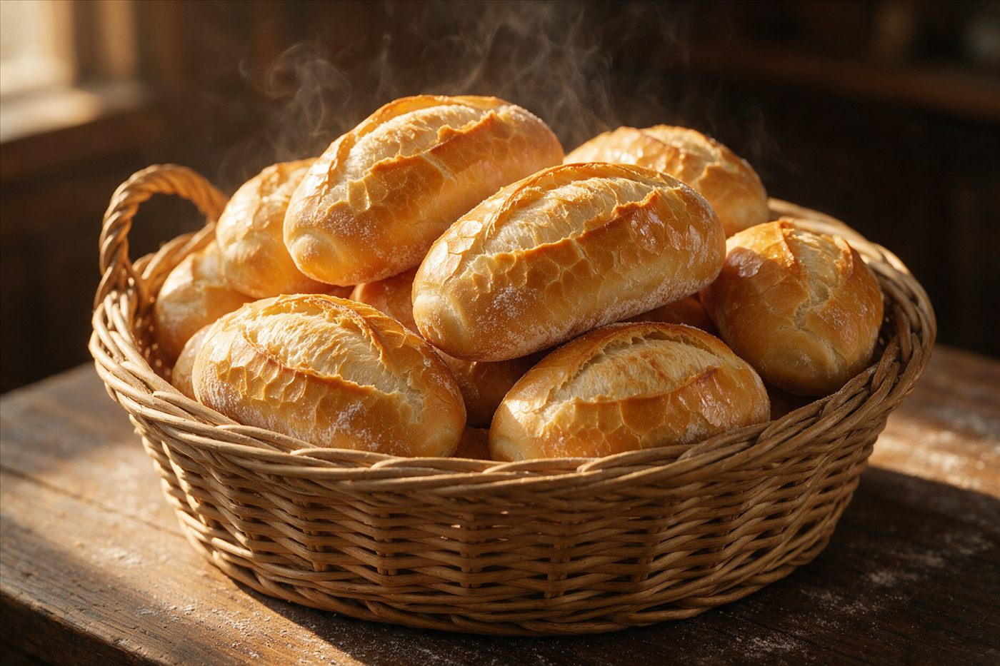
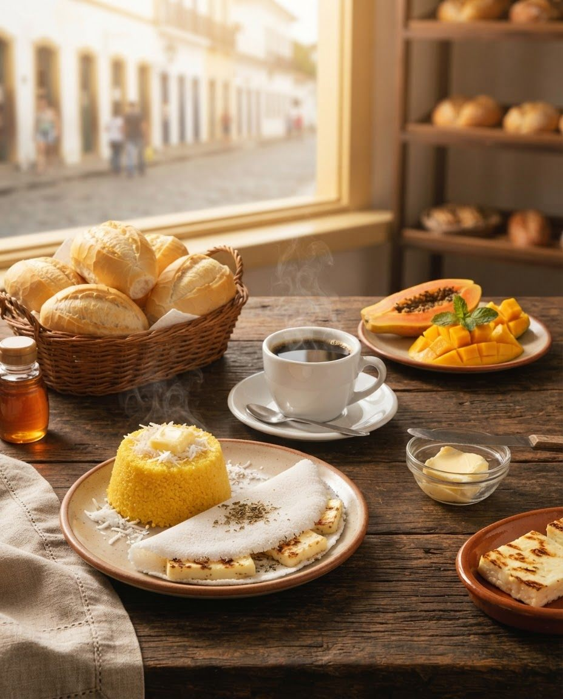
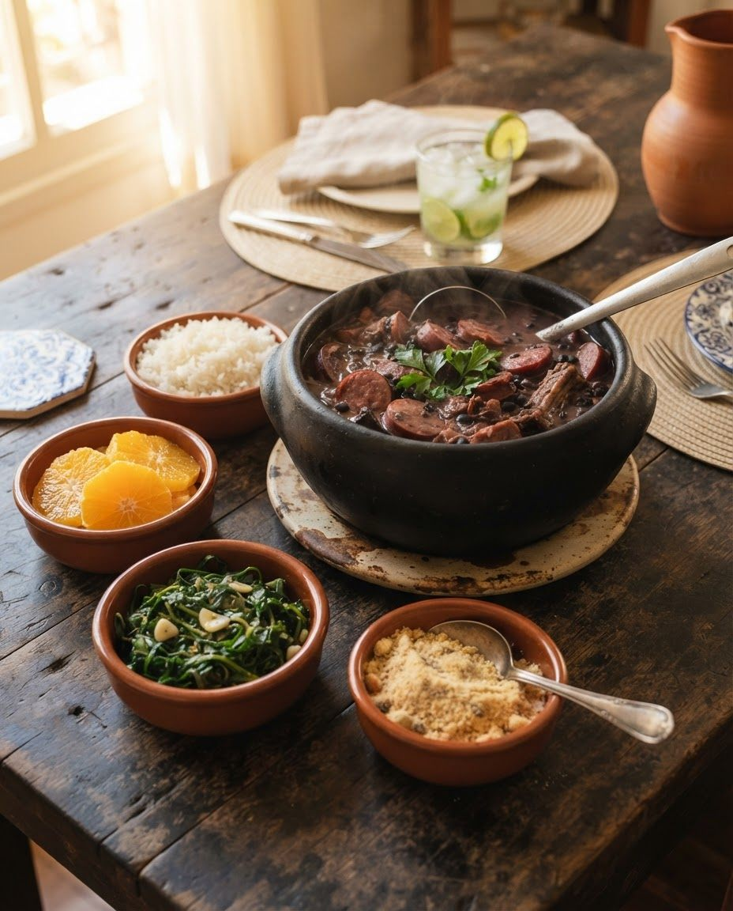
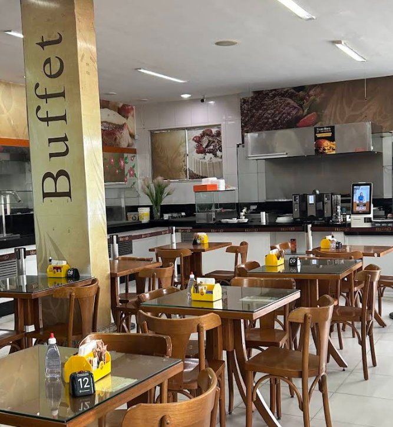
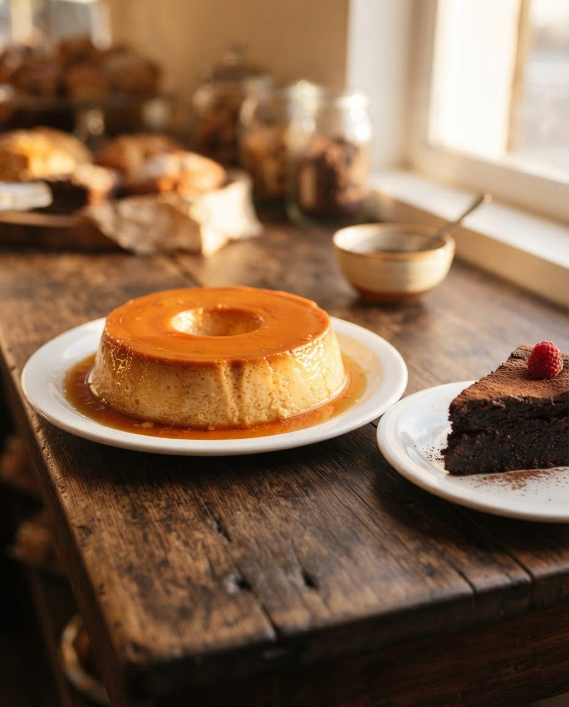
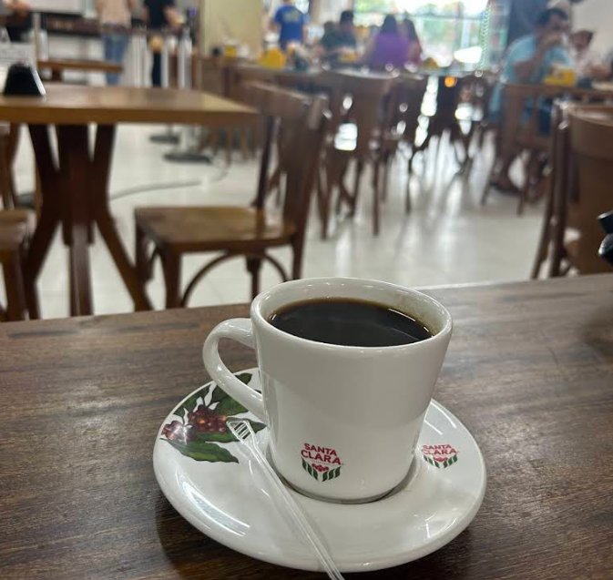
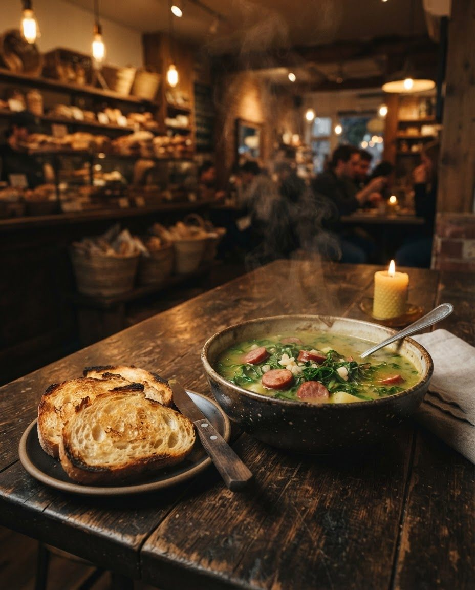
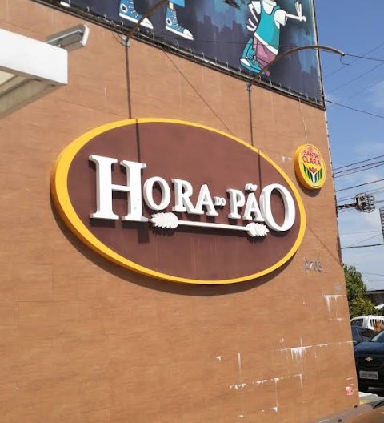

05h
O forno acende antes da cidade
Quando a porta abre, às 6h, o pão francês já está no cesto. E continua saindo ao longo do dia, junto com as bolachas e os pães doces.
- Pão francês
- Pães doces e recheados
- Bolachas da casa

06:00 Em Natal, a padaria abre às 6h. Café da manhã, almoço e jantar no buffet, e pão quente o dia inteiro.
Seg a sex, das 6h às 21h
Av. Romualdo Galvão, 1454, Lagoa Nova
Das 6 da manhã às 9 da noite a mesa muda de cara. Role a página e o relógio anda junto.
05h
Quando a porta abre, às 6h, o pão francês já está no cesto. E continua saindo ao longo do dia, junto com as bolachas e os pães doces.

06h
Você monta o prato do seu jeito: o que é da terra, o que é de padaria e café passado na hora. Dá para comer com calma no salão ou levar.

11h
O buffet troca o café pelas panelas: carnes, legumes, saladas e os acompanhamentos de casa. Na terça, a feijoada é a dona do balcão.


15h
Hora de sentar, pedir um café e escolher o doce na vitrine. As tortas e o pudim também saem inteiros, para a sobremesa de casa.


18h
O dia fecha no buffet, com prato quente e pão para acompanhar. Servimos até as 21h durante a semana e até as 21h30 no sábado.

Francês, de forma, doces e recheados. Saem do forno várias vezes ao dia.
No balcão e no delivery
As de padaria de verdade, para acompanhar o café ou levar no pacote.
No balcão
Em fatia para a pausa da tarde, inteiras para aniversário e reunião de família.
Inteiras sob encomenda
De leite, com calda de caramelo. Em fatia no salão ou inteiro para a sua mesa.
Inteiro sob encomenda
Café da manhã, almoço e jantar, todos os dias. Sirva-se no salão ou monte para viagem.
No salão e para levar
Escreva o que você quer e o pedido chega pronto no nosso WhatsApp. A gente confirma valores, horário e forma de pagamento por lá.
Prefere aplicativo? O cardápio de delivery também está no iFood.
Pedir pelo iFoodA Hora do Pão fica em Lagoa Nova, na Romualdo Galvão. É padaria e é restaurante: tem quem passe só para levar o pão e tem quem fique para o almoço.
O salão é de madeira clara e mesa com número, o buffet fica à vista e o café é Santa Clara. Sem cerimônia.
No Facebook, 90% de quem avaliou recomenda a casa, em 373 avaliações. No TripAdvisor, a nota é 4,1 de 5.

Confira os horários abaixo
| Segunda a sexta | 6h às 21h |
|---|---|
| Sábado | 6h às 21h30 |
| Domingo | 6h30 às 20h30 |